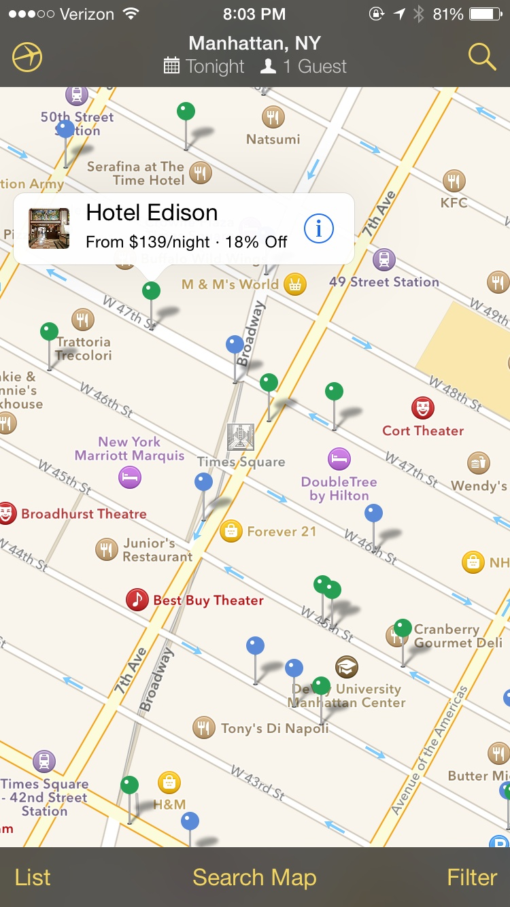
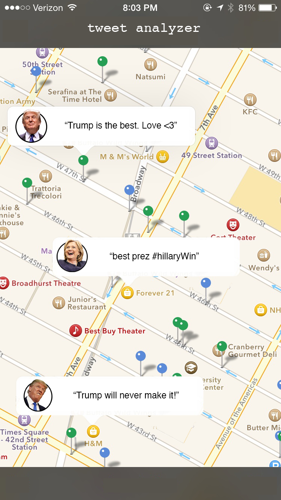
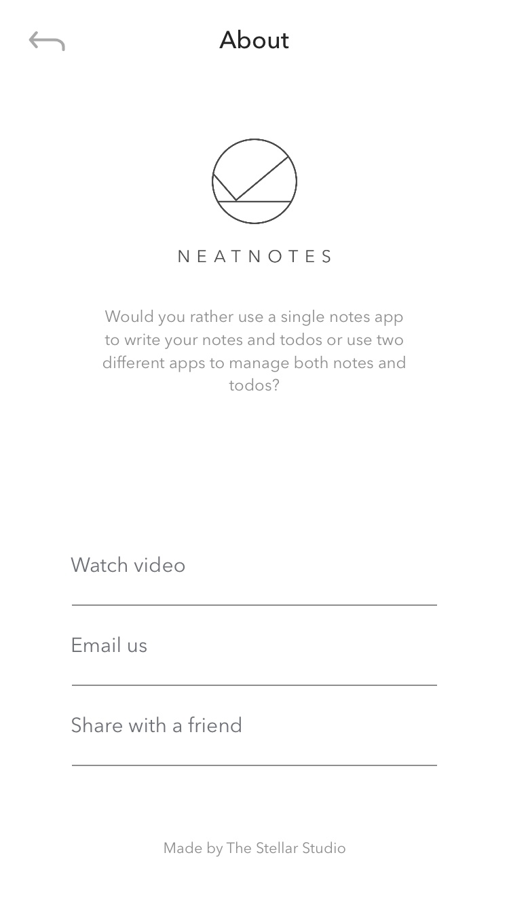
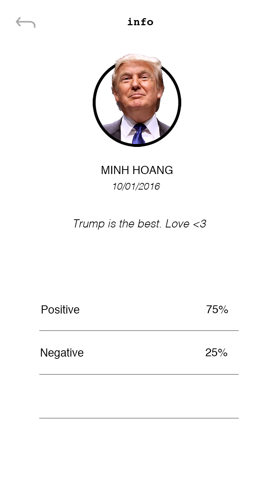
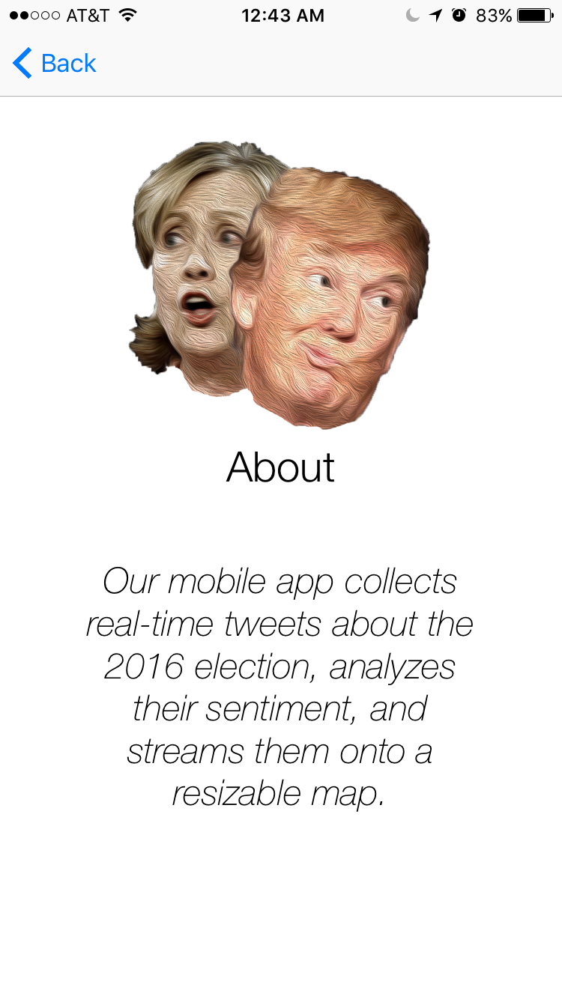
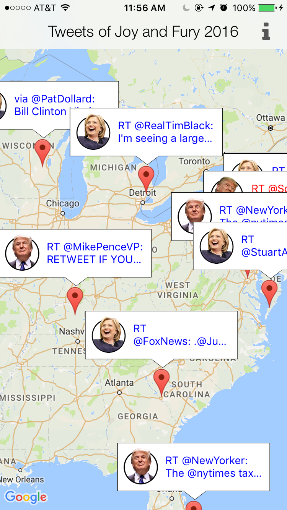
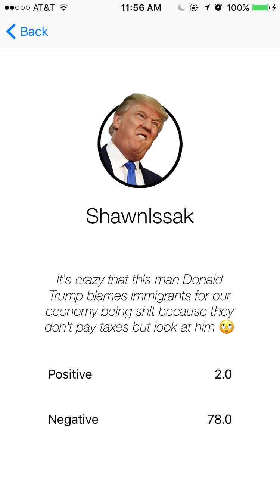

Link to code This is the Github of my partner, he linked both the back end and the client into it. Please note that, in this blog, I will focus mostly on the client part
Have you ever wondered what people talk about the 2016 Presidential debates? This iOS application parses and applies sentiment analysis in real time on Tweets related to Trump and Hillary. You can actually see Tweets popping up in your local area in real time!
Table of Content
Logic Overview
In this project, I worked together with two other geniuses. One worked on the backend and the other on the data analysis. Thus, I will talk mostly about my work, which is the implementation of the front-end.
Getting the Tweets
Firstly, we called Twitter’s API to get the Tweets. Of course, we had to pass in certain queries and parse the data in different ways. Lastly, we trained our model with Stanford’s data and apply sentiment analysis. For result, the client push its current location of the map along with the radius of the current zoom level to the server, which will send back data accordingly.
Displaying the Tweets
We liked the idea of having Trump’s faces all other the map. Thus, for every negative Tweet about him, there would be an angry Trump on the map. The same idea applies to display happy Trump, sad Hillary, and happy Hillary. So, here they are, feast your eyes:
And, we also wanted to display live Tweets, so that the heads will pop up everytime, which would be really cool!
Implementation Details
I devide this section into multiple milestones. Each problem took considerable amout of time and had a profound impact on the project.
Prototyping
Learning from the pit fall of my last side project, this time, I needed to have a prototype.
And, I needed it fast! In the end, it took me 3 hours, which is not ok
Firstly, we discussed the purpose of the application and determined its features. Then, the sketches and revisions with the whole team. Normally, during this prototyping progress, people took designs from many places and modify them accordingly. I highly recommend using Photoshop/Keynote to modify designs on pttrns and wrap the entire process with inVision.
Here are the raw designs and their modifications side by side:
 
 
Please note that although, it took 3 hours in total, but creating the faces with Photoshop took over 70% already. Modifying the designs and creating an interactive prototype took little to no time. If you are not convinced to create a prototype for your new project, please refer to this video by Apple: Prototyping: Fake it til you make it I will really change your mind.
Also, I left out the part when I ran around and asked people for their experience in using the app. That was important too, the final design you saw above was not my first attempt. It had gone through many iterations with feedback. Since, this was my first time doing this, I will save the talk for the next blog, when I have more experience.
Creating custom info windows
This was very simple, the tutorials for it were scarce and mostly in Object-C. You can look through my code, everything should be inside the folder named InfoWindow and the initialization will be inside class MarkerCreator. Basically, you are going to:
- Create a xib
- Create an extension to easily initialize the xib as a View
- Init it and place into appropriate place
Here are some nice materials that I went through:
- Question on StackOverflow: Link
- Init from XIB: Link )
- Custom InfoWindows in Google Maps SDK for iOS: Link
Displaying all the windows
By far this was the hardest challenge for the entire project. Not only Google Maps SDK did not support the feature, but there was also almost no material on the subject. You can take a look at my MarkerCreator class for the code, but here are the general ideas:
- Google Maps SDK does not support displaying all the info windows (they do on Android), but they can display multiple markers on the map. We need to convert the info windows into an image.
- Change the image of the marker to our newly info window images.
Requesting the Tweets
Whenever the user pan or zoom in with the map, we have to send the location at the center of the map along with its radius (pan level) to the server. The server will then send back JSON objects about the tweet. Also, we do not want to send the locations too often, we need only sending a new request once every 5 seconds.
In our final project, we did not have the time to dispatch each received tweet asynchronously to display them slowly. Although, the program could display ten tweets each time, that still counted as semi-responsive, right? Lastly, for networking, I used Alamofire and swiftJSON.
Demo
Here are some screen shoots of our final project.


